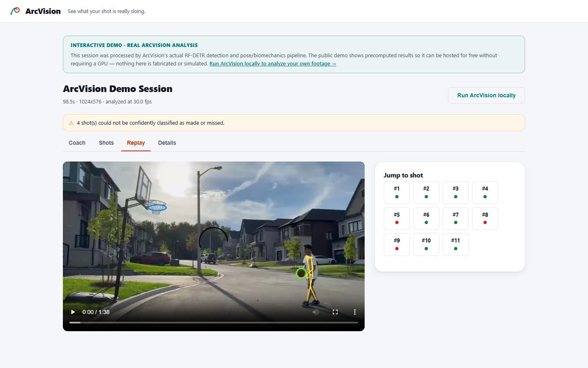
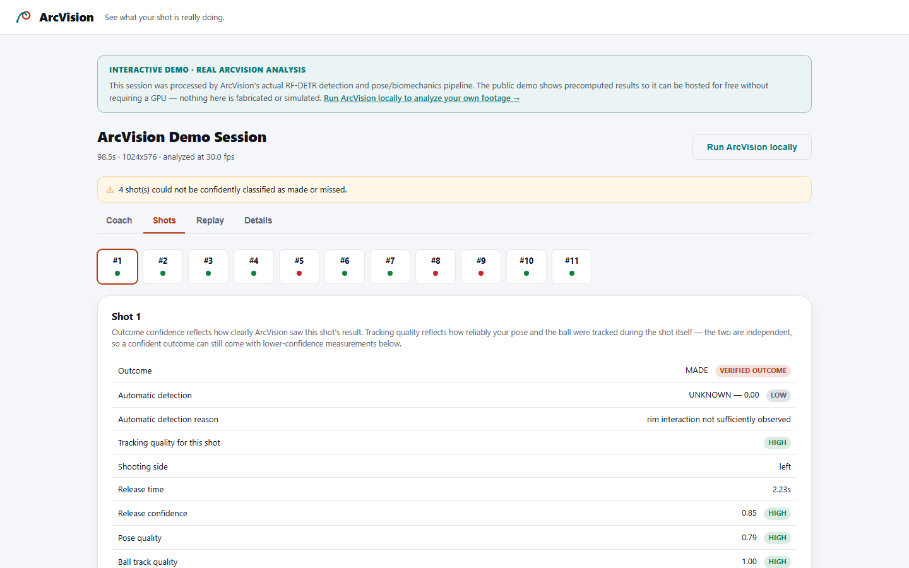

ArcVision tracks the ball, hoop, and shooter through ordinary video, then breaks down each shot's mechanics, consistency, and outcome.
Record several shots from a stationary phone or camera, keeping the shooter and hoop in frame the whole time. A side or side-front angle works best.
ArcVision detects the ball and hoop, tracks the ball frame by frame, follows the shooter's pose, and splits the footage into individual shot attempts.
Review each shot with replay and measured mechanics, compare makes against misses, and see where your form is most consistent — or where it varies the most.
The public demo is a real ArcVision session, not a mockup. Replay the annotated video, jump to any shot, and see the verified outcome next to the mechanics ArcVision actually measured.
Try Interactive Demo

This can take a few minutes depending on video length.